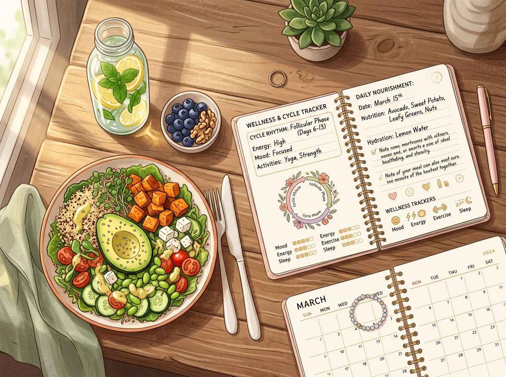

📖 导语
“经期新陈代谢超快，怎么大吃都不会胖！”——不知有多少女孩子被这句流传甚广的谣言坑过，放纵吃高糖油炸，结果姨妈一走长胖3斤！
更让人抓狂的是：每次来大姨妈前几天，整个人水肿一圈，体重秤数字直接飙升2~4斤，还控制不住地想暴食甜点奶茶……这到底是怎么回事？
▲ 顺应生理周期吃对动对，身体自然轻盈好气色
别慌，也别急着责备自己“自控力太差”！今天我们来把经期体重波动、暴食冲动背后的荷尔蒙秘密一次性讲清，手把手教你利用好生理周期的规律，把大姨妈变成你的“身材与皮肤黄金加速器”！
🧁 “经期吃不胖”是最大的谎言！
💡 医学事实：经期的基础代谢仅仅比平时微增不到 5%！
这微弱的代谢增加，折算下来一天连半片饼干的热量都消耗不完。所谓的“吃不胖”，只是一种由水肿退去产生的错觉！
为什么很多女生会有吃不胖的假象？
因为在经期前，身体为了保护子宫会大量“蓄水”，造成严重水肿。月经来潮后，滞留的水分随经血和汗液逐渐排出，水肿退去带来的体重下降，正好掩盖了多吃带来的脂肪堆积！一旦经期结束，吃进去的脂肪就会原形毕露。
⚖️ 经前暴涨 2~4 斤、狂想吃甜食，怎么办？
如果你在经前一周出现以下症状，请放心，这是超过 85% 女性都会经历的生理现象：
🧬 两大激素作怪的秘密：
- 孕激素飙升保水保钠：细胞像吸饱了水的海绵，造成腰围变粗、小腹胀起、四肢浮肿，体重自然上涨 1~2 公斤，这不是长肉，是纯水分！
- 血清素（快乐激素）断崖下跌：大脑由于激素失衡感到空虚疲惫，身体出于自我保护，本能地渴望高糖、高碳水来快速刺激多巴胺，产生安慰感。
- 千万不要极端控碳：在经前期过度饥饿或完全不吃主食，会刺激皮质醇（压力激素）爆发，反而引发更严重的报复性暴饮暴食！
- 聪明的替代方案：用优质慢碳（烤红薯、玉米、贝贝南瓜、燕麦）代替精制甜点；想吃巧克力时，选择 70% 以上的高纯黑巧克力（富含镁元素，能有效安抚情绪并缓解腹痛）。

▲ 顺应周期吃出好身材，让每一餐都成为滋养
📅 28天生理期高效减脂调理四步法
1. 月经期（第 1~7 天）：温养休整，别量体重
重点：补铁温补，杜绝生冷，避免剧烈运动。
行动：多吃瘦牛肉、菠菜、黑豆，喝温热姜枣茶。此时不要每天频繁称重增加心理焦虑，专注让身体充分休息排空。
2. 卵泡期（第 8~14 天）：燃脂超速黄金周 🔥
重点：全月最高效燃脂周，控糖塑形双倍见效！
行动：雌激素到达巅峰，食欲平稳且代谢极佳。严格执行低 GI 饮食，补充鸡胸肉、海鲜等高蛋白，搭配慢跑、HIIT或力量训练，掉秤效果最显著。
3. 排卵期（第 15~21 天）：平稳巩固期
重点：代谢平稳，保持健康节奏。
行动：食欲容易轻微反弹，饮食中保证足量蔬菜和抗氧化水果，做做瑜伽和中低强度有氧，稳步固化减脂成果。
4. 黄体期（第 22~28 天）：去水肿防暴食，温柔自愈
重点：抗水肿、稳血糖、保卫好心情。
行动：少吃高盐重口味（盐分会加剧水肿），喝玉米须水、红豆薏米汤排水。接纳水肿带来的体重微涨，早睡泡脚，静候大姨妈的来临。
🌸 缓缓愈见 · 读懂身体的自愈节律
体重秤上的数字只是参考，长期的好体态与健康好气色才是目标。
学会记录身体的每一次潮汐变化，你会发现自己其实一直很美。
💡 微信搜索小程序：「缓缓愈见」
智能推算经期与易孕期，打卡每日体重、体温与身心状态，温暖守护每个周期